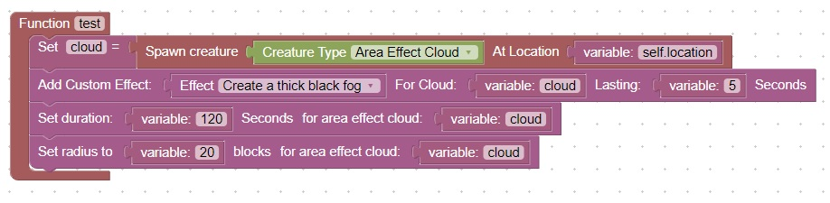

Area Effect Clouds
Note: Perform an update as described here before attempting this homework (thanks).
After investigating lingering potions, I found this post online:
I want to make the lingering potion particles last longer after it has been thrown.
How (if possible) can I do this?
Answer:
You can't customise the cloud of a lingering potion after it has been thrown, although you can summon custom clouds
without the lingering potion using the server command:
/summon minecraft:area_effect_cloud ~ ~ ~ {Radius:5,Duration:10000,Effects:[{Id:5,Amplifier:0,Duration:60}]}
Where the first duration is the time the cloud lasts in ticks, and the second duration is the time the potion effect lasts in ticks.
I thought about this and wondered was an area effect cloud considered a creature? Could I summon one like
I would summon a mob?
After further trial and error I added a section in Items named Area Effect Cloud.
In this section you can:
- Add Custom Effect (a potion effect)
- Set the duration of the cloud to exist
- Set the radius of the cloud
For this homework, create an area effect cloud and change the radius, duration, and effect. Its pretty cool
You can use this diagram as an example:

Note: It is also possible to set the cloud particle color (default color is black). Let me know if you would like to try this option.